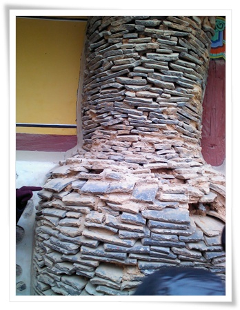

회사 동호회 11월의 여행지는 여주.

하필이면 올해 들어 제일 춥다는 12월 10일. 일기예보상 서울 한낮기온 영하 5도.
아침 4시반 일어나, 출발지인 명동으로 갔다.
04:30 기상
05:40 ~ 06:50 명동으로 이동
07:00 ~ 09:00 파사성 입구로 이동
09:00 ~ 10:20 파사성 탐방
10:30 ~ 11:00 신륵사로 이동
11:00 ~ 12:00 신륵사 문화해설
12:00 ~ 12:40 점심식사
12:40 ~ 13:00 세종대왕릉으로 이동
13:00 ~ 14:00 세종대왕릉 문화해설
14:30 ~ 15:00 명성황후생가로 이동
15:00 ~ 16:00 명성황후 문화해설
16:30 ~ 17:30 저녁식사
17:30 ~ 20:00 서울로 복귀
버스는 고속도로를 타고, 여주IC쪽으로 나왔다.
파사성가는 길에는 유난히 부동산상가가 많이 보였다.
그 중에 '대운하부동산'이라는 간판이 눈에 띄더군.
파사성으로 올라가는 길은 이포대교 바로 옆이었다.
- 파사성 입구에서 있는 안내판. 성 자체는 그리 크지 않은 것 같더군.
파사성은 삼국시대 신라 파사왕때 축소된 성이라 한다.
- 시작부는 이렇게 임도같은 느낌.
- 딸내미도 추위에 단단히 무장하고 나섰다.
- 간만에 산에 오르는 아내와 딸.
- 입구에서 900m쯤 올라가니 파사성이 나왔다.
- 아직 복원공사중이다.
- 정상으로 오르는 길 양 옆으로 억새가 많다.
억새를 보니, 꼭 유명산 억새가 생각난다.
- 억새 너머로 보이는 여주 풍경
- 딸내미에게 억새 하나 꺾어줬는데, 재미있단다.
- 왼쪽의 이포대교와 오른쪽 이보포.
저거 새물맞이 행사한다고 하루만에 행사비로만 40억(이포보만 10억) 썼다던데, 파사성 복원비용으로나 쓰지.
- 복원된 파사성
정상에서 보니 남한강이 한눈에 보인다. 그런데 파헤쳐진 강 풍경은 별로 좋아 보이지 않군.
- 마애여래불을 보기 위해 가는 중.
- 마애여래입상. 경기도 문화재로 정식명칭이 '양평 상자포지 마애여래입상'이라고 안내판이 붙어 있다.
고려시대 만들어진 거라고 한다.
'마애불'의 뜻이 돌로 세겨진 부처고, '여래' 뜻이 부처이니, 돌에 새겨진 부처상이군.
파사성에 내려와, 다음 목적지 신륵사로 향했다.
신륵사에는 문화해설사 예약을 했었기에, 문화해설사의 설명을 들으며 관람했다.
- 신륵사에서 설명해주시는 문화해설사.
설명도 정말 잘 해주시고, 아시는 것도 많아 정말 혼자서 왔을 때와 차원이 다른 관람이 될 수 있었다.
- 정자로 이동중. 왼쪽이 다츰전답
- 지난 가을에 왔었을때는 공사중이이었는데, 이제 제 모습이다.
그런데 4대강 공사로 정자에서 보는 강 넘어 풍경은 영 아니다.
- 강가에 절이 있는 것이 별로 없는 듯 하다.
그래서 남한강에 이런 정자가 있게 신륵사의 매력인 듯 하다.
- 정자에서 바라본 남한강. 추워서 그렇지, 봄,가을에는 정말 좋을 듯 하다.
- 삼층석탑. 고려시대 석탑이라고 한다.
삼층부는 몸통부가 없어져 바로 지붕이다.
석탑이 있는 이 곳이 신륵사를 만든 나옹선사를 화장했던 다비식이 있었던 곳이라고 한다.
- 석종부도앞 석등. 용무늬가 있고, 돌이 각각 다른 재질이다.
- 대장각기비.
대장각을 세운 것을 기념한 비라고 한다.
지금은 대장각은 없다. 임진왜란때 불타 없어졌다고 한다.
-다층석탑.
재질이 대리석인데, 대리석이란 뜻이 대리석이 나는 지방이 중국 대련인데, 거기서 수입해서 만든 석탑이라 한다.
대리석도 그 지명 '대련'에서 온 거라 한다. 석탑뒤로 극락보전이 공사중이다.

-요사채의 굴뚝.
-명부전. 지장보살과 시왕이 있다.
보살과 부처상을 어떻게 구별하는지 궁금하여 문화해설사에게 물어보았다.
부처상은 짧고 곱습한 머리카락이 있고, 다른 장식은 없고,
보살상은 보통 금관을 쓰고 있고, 화려한 장식이 있다고 한다.
여기의 지장보살은 초록색 두건을 썼다.
- 조사당. 안에는 나옹선사상이 있다.
이 조사당 하나만 원래부터 있던 건물이고, 나머지는 전란중에 다 없어졌다가 복원한 거라고 한다.
- 나옹선사 부도.
나옹선사의 다른 이름이 보제존자라서 '신륵사 보제존자 석종'이 정식 명칭으로 되어 있군.
다비식후 머리에서 나온 사라만 모신 거라고 한다.
여기에 오르는 계단은 57개. 나옹선사의 속세 나이라고 한다.
문화해설사로부터 아주 기억에 남는 설명을 듣고 나니, 한층 더 보는 눈에 높아진 듯 하다.
신륵사 관람후, 점심을 먹은 후, 세종대왕릉으로 향했다.
세종대왕릉의 명칭이 영름. 그 옆에 있는 효종대왕릉도 영름. 한문은 다르다.
-세종대왕릉 입구.
이곳에서 또 다른 문화해설사를 만났다.
- 재실.
왕족이 제사를 지내기 위해 올 때 머무리는 곳이다.
- 세종대왕릉으로 가는 훈민문.
- 홍살문. 우측은 한창 복원공사중이다.
- 정자각. 제사를 지내는 곳
- 세종대왕 영릉. 그리 화려한 편은 아니다.
신륵사에서는 문화해설사에게 감탄을 했었는데, 이곳 세종대왕릉의 문화해설사에게 실망을 했다.
한창 설명을 하면서, 이곳 영릉의 최고 명당자리의 기운으로 우리나라가 G20 의장국이 되었다라는 말을 하는데, 기가 막혔다.
추운 날씨라 세종대왕릉에서 덜덜 떨며 관람하고 나서, 명성황후 생가로 갔다.
명성황후 묘는 고종과 함께 남양주에 홍릉으로 있으며, 생가가 여기 여주에 있다.
-명성황후 기념관
- 저 곳이 명성황후 생가


최근 덧글